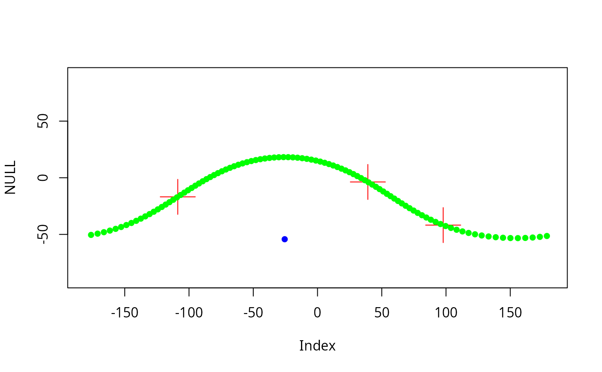

Identify whether a given set of points is in, on or out of a small circle
Usage
sc_in(x, center, r, origin = c(0, 0, 0))Value
A numeric vector indicating whether the points are in (1), on (0) or outside of the small circle.
Examples
# generate 3 points on a sphere
ps <- icosa::rpsphere(3, output="polar")
small <- sc_center(x=ps)
circle<- sc_shape(x=small$center, r=small$r, output="polar")
plot(NULL, NULL, xlim=c(-180, 180), ylim=c(-90, 90))
points(ps, col="red", pch=3, cex=4)
points(small$center, col="blue", pch=16)
points(circle, col="green", pch=16)
